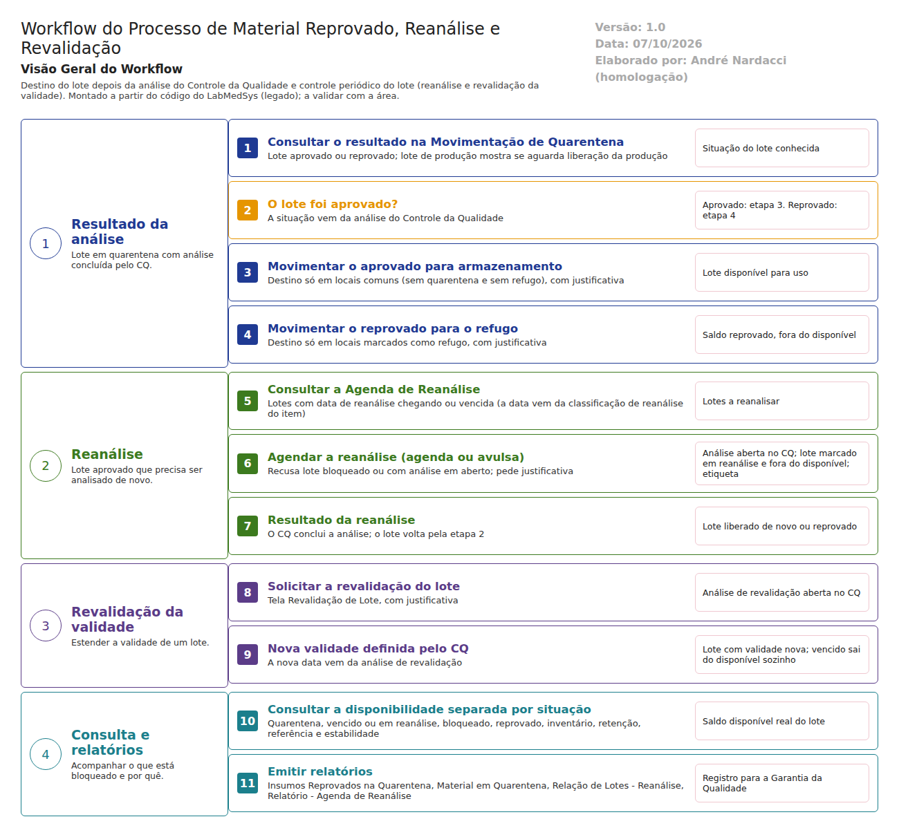
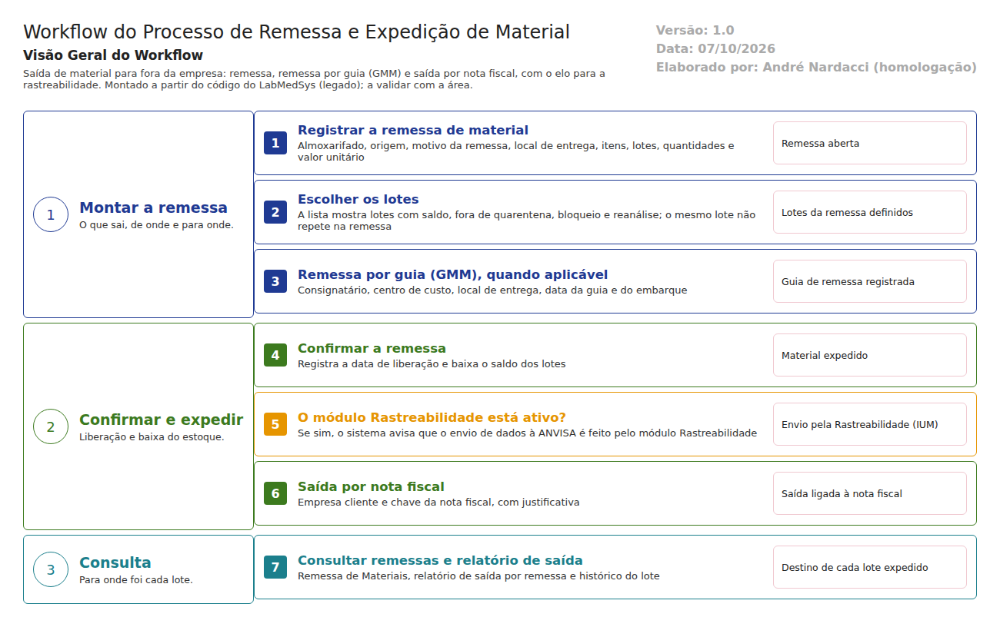
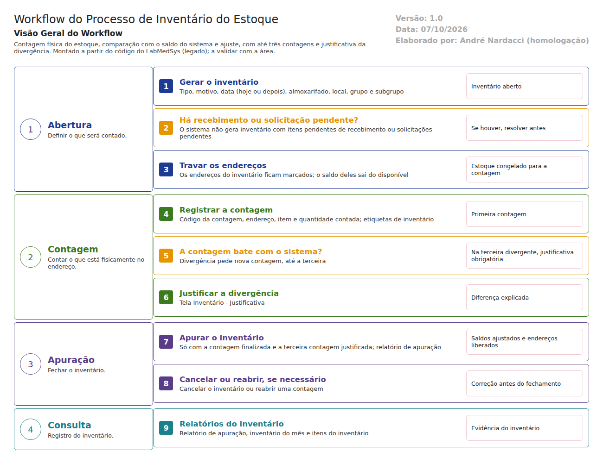
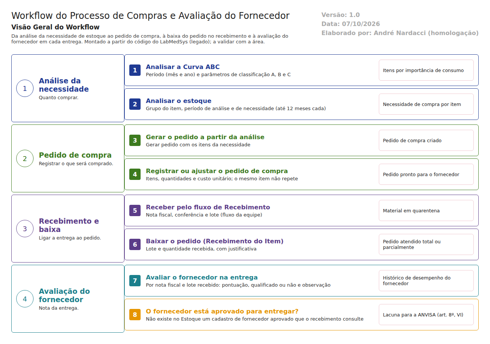

Estoque
Recebimento, quarentena, endereçamento, movimentação, atendimento à produção, devolução, remessa, inventário e kits. Dez fluxos documentados; testes de tela parados no Endereçamento, aguardando o DBA.
Fluxos prontos, testes pausados
- Reconhecimento
- Fluxos
- Testes
- Entregáveis
15documentos
10fluxos documentados
29casos de teste (maior plano)
16desvios registrados nos testes
Comece por aqui
Visão geral e resumos para quem quer entender rápido.
Fluxos do processo
Como o trabalho anda no sistema, etapa por etapa, com fluxograma.
Fluxo descrito em texto
Recebimento e quarentena (conferência) Movimentação interna
Movimentação interna
Reprovado, reanálise e revalidação Solicitação e atendimento à produção
Solicitação e atendimento à produção Devolução e entradas da produção
Devolução e entradas da produção
Remessa e expedição
Inventário Kits
Kits
Compras e avaliação do fornecedor Almoxarifado do Controle da Qualidade
Almoxarifado do Controle da QualidadeRegras e uso
Regras de negócio, telas e manual para quem usa o sistema.
Defeitos para correção
Para a equipe de desenvolvimento: cada defeito encontrado nos testes, com o passo a passo para reproduzir, as capturas, o trecho do código e uma sugestão de correção.